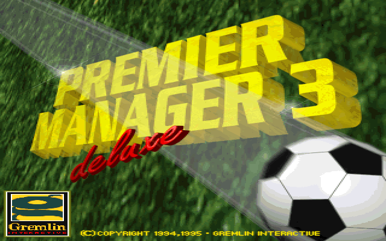
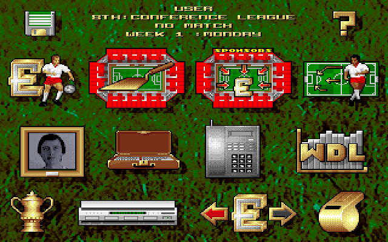

名稱：第一足球經理3 (Premier Manager 3，英文版)
簡介：Realms of Fantasy 1994年出品的足球團隊經營管理模擬遊戲，由Gremlin代理發行，
1995年推出更新資料的「豪華版（Deluxe）」 [待補]。


備註：本版為豪華版
保護：光碟
備註：豪華版安裝時電腦速度不可過快，否則可能會出現divide error錯誤。
備註：原始版執行時電腦速度不可過快，否則可能會偵測不到音效卡而沒有聲音或變成雜音。
檔案：prm3-old.rar = 原始版